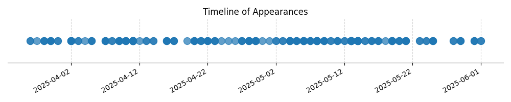

Kategorie: Letecké předpisy
Tato otázka se zabývá pravidly pro vzlety a přistání VFR letadel na letišti v řízeném okrsku, konkrétně minimální základnou oblačnosti. Tyto limity jsou definovány v leteckých předpisech (např. předpisy pro letová pravidla - ICAO Annex 2, EASA Air Operations, nebo národní předpisy) a slouží k zajištění bezpečné vzdálenosti od oblaků pro udržení vizuálního kontaktu s terénem a jiným letadlem. Správná hodnota 450 m (1500 ft) je standardním minimem pro VFR provoz mimo řízené oblasti, ale uvnitř řízeného okrsku se mohou uplatnit specifické podmínky nebo privilegia pro vzlety/přistání, které mohou umožnit provoz i při nižší základně oblačnosti, pokud je to povoleno místními procedurami nebo specifickými pravidly pro provoz v daném okrsku. Pokud se však otázka ptá na obecné pravidlo pro vzlety a přistání VFR v řízeném okrsku, musí se vycházet z platných předpisů. Nicméně, je důležité poznamenat, že tato hodnota může být v různých jurisdikcích mírně odlišná. V kontextu testové otázky, pokud je 450 m označena jako správná, znamená to, že daný předpis nebo pravidlo, na které se otázka odvolává, stanovuje tuto hodnotu jako relevantní minimum pro vzlety/přistání VFR v řízeném okrsku. Správná odpověď C tedy implikuje, že předpis pro danou situaci stanovuje minimální základnu oblačnosti 450 metrů.

| Datum výskytu |
|---|
| 2025-06-01 |
| 2025-05-31 |
| 2025-05-29 |
| 2025-05-28 |
| 2025-05-25 |
| 2025-05-24 |
| 2025-05-23 |
| 2025-05-21 |
| 2025-05-20 |
| 2025-05-19 |
| 2025-05-18 |
| 2025-05-17 |
| 2025-05-16 |
| 2025-05-15 |
| 2025-05-14 |
| 2025-05-13 |
| 2025-05-12 |
| 2025-05-11 |
| 2025-05-10 |
| 2025-05-09 |
| 2025-05-08 |
| 2025-05-07 |
| 2025-05-06 |
| 2025-05-05 |
| 2025-05-04 |
| 2025-05-03 |
| 2025-05-02 |
| 2025-05-01 |
| 2025-04-30 |
| 2025-04-29 |
| 2025-04-28 |
| 2025-04-27 |
| 2025-04-26 |
| 2025-04-25 |
| 2025-04-24 |
| 2025-04-23 |
| 2025-04-22 |
| 2025-04-21 |
| 2025-04-20 |
| 2025-04-19 |
| 2025-04-17 |
| 2025-04-16 |
| 2025-04-14 |
| 2025-04-13 |
| 2025-04-12 |
| 2025-04-11 |
| 2025-04-10 |
| 2025-04-09 |
| 2025-04-08 |
| 2025-04-07 |
| 2025-04-05 |
| 2025-04-04 |
| 2025-04-03 |
| 2025-04-02 |
| 2025-03-31 |
| 2025-03-30 |
| 2025-03-29 |
| 2025-03-28 |
| 2025-03-27 |